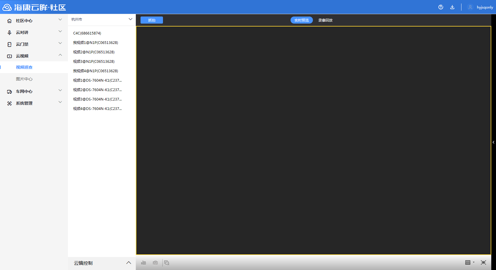
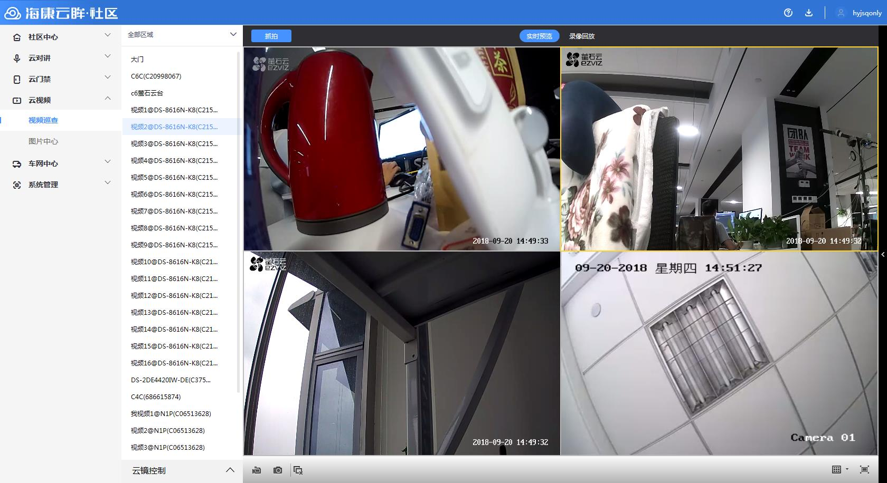

7.1视频巡查
步骤1 进入“视频巡查”，左侧默认展示全部视频点位，可选取不同级别的分组进行组内视频点位展示。

说明
1.可选择单个社区进行查看，也可针对社区中心划分的各等级区域，查看区域范围内的所有点位。
步骤2 选择单个视频点位，即可开始视频点位预览和回放功能。可设置单路、4路、9路等多路视频进行实时预览。

说明
1.在单视频预览下，可点击画面左上方“抓拍”键进行截图，同时可通过右侧抓拍列表浮窗，对抓拍图片进行编辑。
2.多路视频同时预览，可点击画面左下方“全部录像”“全部抓拍”“全部关闭”对所有画面进行统一操作。
3.可点击右下角切换画面显示路数及分布，或切换全屏模式。